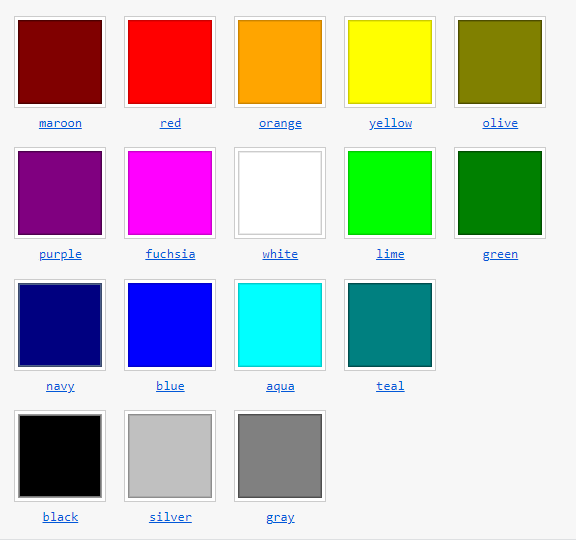

La propietat background-color no s'hereda, el valor inicial del
background-color es el transparent, pero es pot omplir per a establir
el color de fons d'un element. CSS defineix 17 paraules clau en el
sistema per a referirse als colors basics de fons. Hi ha altres
maneres de utilitzar el background-color sense haver de posar ninguna
de les 17 paraules claus dels colors.

Hi ha tres maneres de ficar RGB al nostre background-color, amb
decimal, amb percentatge i amb hexadecimal
Les sigles signifique HSLA(hue, saturation, lightness, alpha).
- Hue: Defineix un gran al cercle del color, vermell (-0 o 360), verd
(120), blau (240).
- Saturation:
- Lightness:
- Alpha: Hi ha dos maneres de definir el background-color amb
HSL.